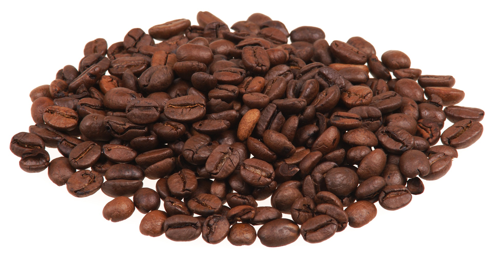
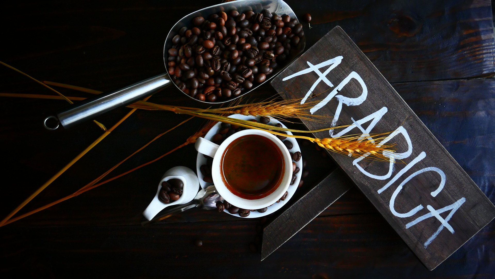
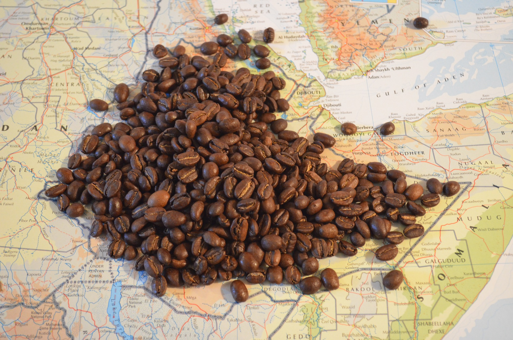
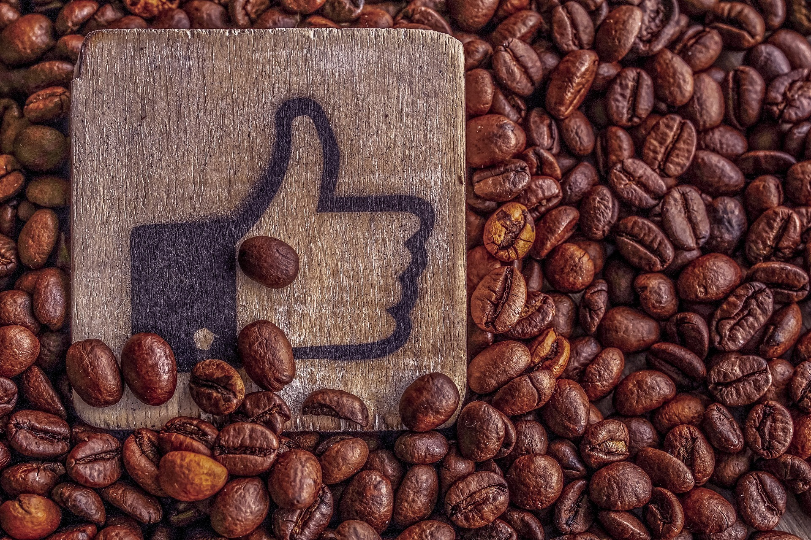

Kaffee ist heute das bekannteste Getränk der Welt. Neben
Erdöl ist Kaffee das meistgehandelte Produkt weltweit. In Deutschland werden
jährlich ca, 530.000 Tonnen Kaffee mit einem Handelsvolumen von 3,5 Milliarden
Euro umgesetzt. Das entspricht einem Pro-Kopf-Verbrauch von 6,5 Kilogramm.

Der Geschmack
Kaffee enthält mehr als 800 Aromakomponenten, die je nach
Sorte, Bodenbeschaffung, Temperatur und Röstung variieren. Die geernteten
Kaffeekirschen müssen vom Fruchtfleisch (Pulpe) befreit werden, um ihren
kostbaren Kern – die Bohne – freizulegen. Dafür gibt es zwei Methoden: nass oder
trocken.

Die Sorten
Es gibt insgesamt 103 verschiedene Kaffeearten und von
diesen 103 verschiedenen Kaffeearten werden überraschenderweise hauptsächlich
zwei für die unzählig vielen Kaffeesorten verwendet, die wir aus den Läden
kennen: die Coffea Arabica und die Robusta.

Der Ursprung
Es ist bewiesen, dass die Pflanzengattung Coffea im
tropischen Afrika entstanden ist. Das äthiopische Hochland gilt als Ursprungsort
der Coffea Arabica Bohne. Dort wurde Kaffee bereits früh in der Geschichte -
nämlich im 9. Jahrhundert - erstmals erwähnt.
Die Gesundheit
Drei bis vier Tassen Kaffee am Tag wirken sich in der
Regel positiv auf die Gesundheit aus. Ein moderater Kaffeekonsum ist mit einem
geringeren Risiko für Herz-Kreislauf-Erkrankungen, Schlaganfälleund Leberkrebs
verbunden. Auch ein niedrigeres Risiko für Parkinson, Diabetes, Alzheimer und
Depressionen wird vermutet.

10. Gründe, warum man Kaffee trinken sollte, zusammengefasst